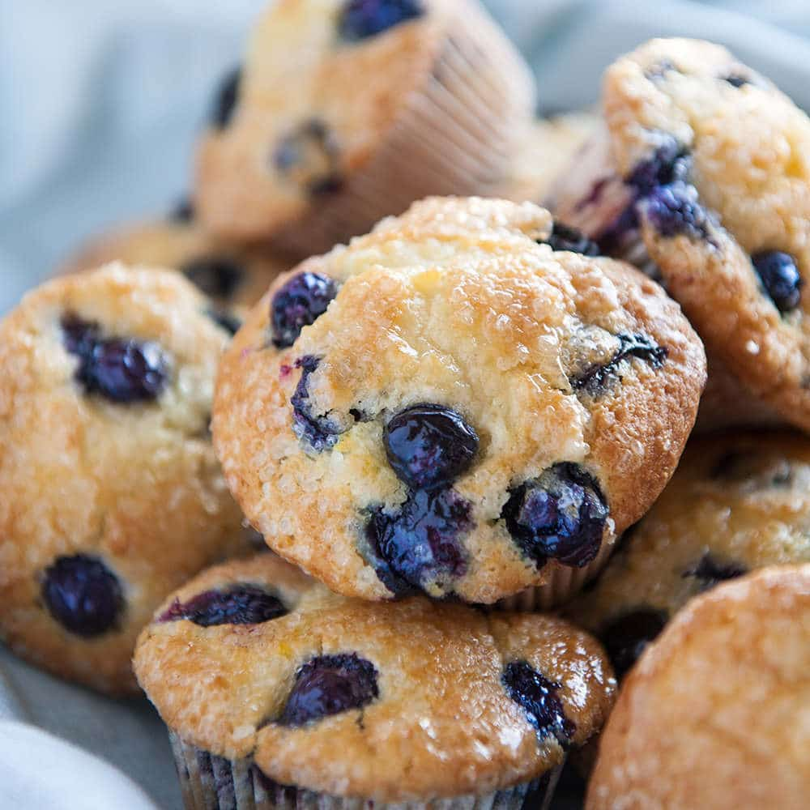

Grandmas Blueberry Muffins
Ingredients:
- 1 cup all-purpose flour
- 1/2 cup white sugar
- 1/2 teaspoon salt
- 1/2 teaspoon baking powder
- 1/4 teaspoon baking soda
- 1/3 cup vegetable oil
- 1 egg
- 1/3 cup milk
- 1 cup fresh blueberries
Instructions:
- Preheat oven to 400 degrees F (200 degrees C). Grease muffin cups or line with muffin liners.
- In a large bowl, combine flour, sugar, salt, baking powder, and baking soda. In a separate bowl, whisk together oil, egg, and milk. Stir the wet ingredients into the dry ingredients just until moistened.
- Fold in blueberries. Fill muffin cups three-quarters full. Bake in preheated oven for 20 minutes.
- test with toothpick when done, if nothing comes on the toothpick when you pull it out then muffins are done!

Geralds Blueberry Pie Recipe
This delicious blueberry pie is the perfect dessert for any occasion. The combination of fresh blueberries and a flaky crust is sure to please everyone. Follow the steps below to make your own blueberry pie at home.
Ingredients:
- 1 cup sugar
- 1/4 cup cornstarch
- 1/4 teaspoon salt
- 4 cups fresh blueberries
- 1 tablespoon lemon juice
- 1 tablespoon butter
- 1 9-inch pie crust (homemade or store-bought)
Instructions:
- Preheat your oven to 375°F. In a medium saucepan, combine the sugar, cornstarch, and salt. Stir in the blueberries and lemon juice, and cook over medium heat until the mixture thickens and begins to boil.
- Remove the saucepan from the heat, and stir in the butter. Pour the blueberry mixture into the pie crust, and smooth the top with a spatula.
- Bake the pie in the preheated oven for 45-50 minutes, or until the crust is golden brown and the filling is bubbly. Allow the pie to cool completely before slicing and serving.